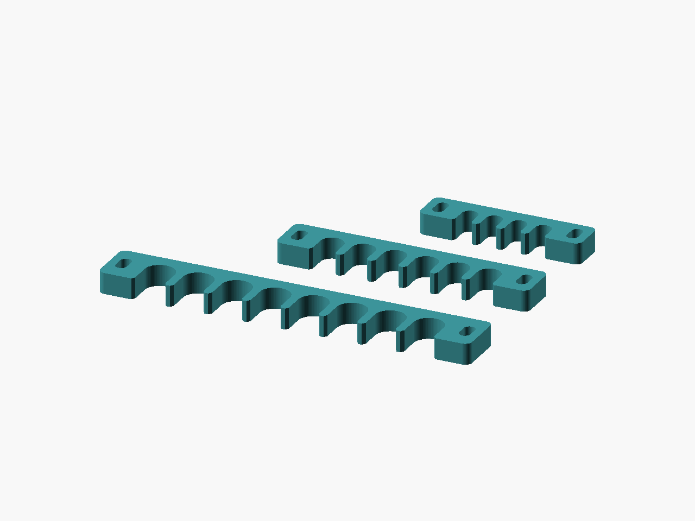

Cable order / v1
Loomfork
A little order for the cable tangle.
Open cable guides. Drop a cable in, lift it out, adjust the source to fit.


- Delivery
- Digital ZIP
- Included
- 3 STL files + source
- License
- CC-BY-4.0 models / MIT source
- Price
- TBD — sales not open
TODO: Etsy listing URL and price. This preview link does not open checkout. No purchase is available yet.
Digital files only. No printed parts, filament, tools or hardware are supplied. AI-assisted CAD scripting was used.
Start small. Check the fit.
Start with the four-channel comb. Measure the cable jacket and check that it slips in without pinching. Open mouths are not locking clips or strain relief.
No physical print or fit test has been performed. Print settings are starting points.
01 / THE DESIGN
Useful details, open to adjustment.
Loomfork separates loose cable runs without forcing plugs through closed rings. Open U channels use a rounded floor and a gently flared entry. Two outer slots take small cable ties for bundling or mounting. Cables remain removable from the top; this is an open guide, not a locking clip or strain relief.
The set contains four channels for 4 mm cables, six for 6 mm, and eight for 8 mm. Total diameter allowance is 0.6 mm. Change count, cable diameter, clearance, spine, wall, and thickness in the source. Measure the cable jacket; never tighten a tie until it dents the cable.
Print the large flat face on the bed in PLA or PETG, 0.20 mm layers, 4 walls, 25% gyroid, 5 top/bottom layers, supports off. PETG is the preferred starting point where parts flex during handling. Feed a tie through each 3.2 x 6 mm slot if needed. Small ties and mounting hardware are not included. The combs have no retention detents, so face the mouths upward or use a loose over-bundle tie when moving a loom.
02 / PRINT NOTES
A starting point for your printer.
- Material
- PLA or PETG
- Alternative
- PETG for repeated handling
- Nozzle / layer
- 0.4 / 0.20 mm
- First layer
- 0.20 mm
- Walls
- 4
- Infill
- 25% gyroid
- Top / bottom layers
- 5 / 5
- Supports / brim
- Off / 0 mm
- PLA nozzle / bed
- 210 / 60 °C
- PETG nozzle / bed
- 240 / 80 °C
Orientation
Large flat side on bed; open mouths point along the bed plane.
Unverified starting points; use filament and printer guidance, tune coupons.
Preserve the shared library path when editing OpenSCAD. Adjust the fit parameter and re-export; do not scale the entire STL to fix a clearance.
Read the printing FAQ03 / DIMENSIONS
Measure before you make.
Nominal CAD bounds in millimetres. Physical print dimensions will vary.
| Export | Role | X × Y × Z (mm) |
|---|---|---|
loomfork-4x4mm | part | 46.4 × 11 × 6 |
loomfork-6x6mm | part | 72.4 × 13 × 6 |
loomfork-8x8mm | part | 106.4 × 15 × 6 |
04 / IN THE ZIP
The files travel together.
31 files · 188.8 KiB · release v1. STL variants, editable source and shared library, two-angle CAD renders, dimension guide, print settings, licenses, platform draft copy, validation snapshot and checksums.
See the exact package contents
- LICENSE
- README.txt
- SHA256SUMS
- VALIDATION.json
- catalog.json
- designs/cable-comb/README.md
- designs/cable-comb/cable-comb.scad
- designs/cable-comb/dimensions.svg
- designs/cable-comb/listings/makerworld.json
- designs/cable-comb/listings/makerworld.md
- designs/cable-comb/listings/printables.json
- designs/cable-comb/listings/printables.md
- designs/cable-comb/print-settings.json
- designs/cable-comb/renders/kit-front.png
- designs/cable-comb/renders/kit-rear.png
- designs/cable-comb/renders/loomfork-4x4mm-front.png
- designs/cable-comb/renders/loomfork-4x4mm-rear.png
- designs/cable-comb/renders/loomfork-6x6mm-front.png
- designs/cable-comb/renders/loomfork-6x6mm-rear.png
- designs/cable-comb/renders/loomfork-8x8mm-front.png
- designs/cable-comb/renders/loomfork-8x8mm-rear.png
- designs/cable-comb/stl/loomfork-4x4mm.stl
- designs/cable-comb/stl/loomfork-6x6mm.stl
- designs/cable-comb/stl/loomfork-8x8mm.stl
- docs/CC-BY-4.0.txt
- docs/LICENSING.md
- docs/PLATFORM-LIMITS.md
- docs/PRINT-ACCEPTANCE.md
- docs/SOURCES.md
- evidence/platform-limits.json
- lib/common.scad
Package: goblin-workbench-cable-comb-v1.zip
SHA-256: a55d559e44ebd693b9c422e7b424e613732ceb78246b79e42cf7c20d07d5ed4a
05 / MAKE IT YOURS
Share it. Change it. Credit the workbench.
CC-BY-4.0 permits sharing and adaptation, including commercial use, with attribution, a license link and an indication of changes. Do not imply endorsement or add legal or technical restrictions that prevent the licensed uses. Editable source is MIT.
Read the license summary and full terms
Designed by Goblin Workbench — Loomfork, v1. CC-BY-4.0. Changes: describe your modifications or state “unmodified.”